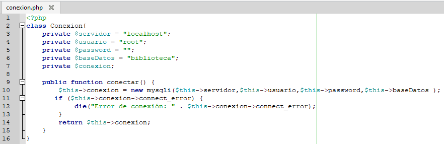

La conexión a la BD se encuentra en el archivo conexion.php mediante la clase Conexion.
Esta clase utiliza la extensión orientada a objetos mysqli de PHP para conectarse a la base de datos MySQL "biblioteca" ubicada en "localhost", utilizando el usuario "root" y sin contraseña.
mysqli tiene 4 parámetros:
“localhost”)“root”)“”)“biblioteca”)$this->conexion = new mysqli(servidor, usuario, password, nombre de la Base de Datos);

El método conectar() ejecuta la conexión y verifica si existe algún error mediante $this->conexion->connect_error. Si falla, el programa se detiene; si es exitosa, retorna el objeto de conexión.